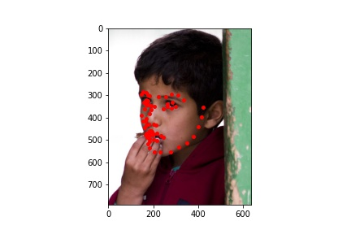
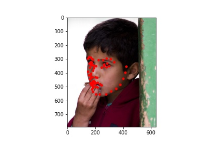

In this project, we will train and use neural networks to automatically detect facial keypoints in given images. In detail, the project will be mainly divided into 6 parts. Firstly, we will use IMM Face Daend-intervalase (240 images for training and validation) to train 1) a model to detect nose tip and 2) a model to dectect full facial keypoints. Then, we go to use a larger daend-intervalase provided: IBUG Face Daend-intervalase (6666 images for training and validation, and 1008 images for testing), to train 3) a model for facial keypoints detector with predefined RestNet. After that, 4) we use the same daend-intervalase but turn the keypoints coordinates into a pixelwise classification problem and train the model with a netural network architecture that outputs pixel-aligned heatmaps. Then, 5) I use the model (from part 3 or 4) to predict the facial keypoints for the images in testing dataset and submit the results to Kaggle. Finally, 6) for Bells and Whistles, I integrate the facial keypoint detection model with the techniques we used in face morphing project to get a system producing face morphing gif automatically without manually selecting pairs of keypoints on input images.
To start with, we first download the data needed from IMM Face Daend-intervalase and write a custom dataloader to load both the images in grayscale and their corresponding nose keypoint coordinates with a batch size of 1 (80% for training and 20% for validation). Then, I convert image pixel values in uint8 from 0 to 255, to normalized float values in range -0.5 to 0.5 and resize the image into samller size: 80x60. Below are some sampled images from the the training dataloader.
Then, I design a CNN, Net_Nose1, as follows:
and learning rate, number of epochs, loss function and optimizer I choose are:
In addition, for hyperparameter tuning, I also try lr = 1e-4 and lr = 0.01. Below are the plots for training and validation MSE loss for each of them.
From above, we can see that different learning rates definitely affect the results and the speed of convergence for training and validation loss. While the plot for lr = 1e-4 converges very fast but stops at some points, the plots for lr = 1e-3 and 0.01 are more fluctuated.
Besides tuning the learing rate, I also try another CNN, Net_Nose2, with different architectures:
and use the same loss function, optimizer and number of epochs with lr = 1e-3, 1e-4, 0.01 respectively. Below are the plots.
From above, we can see different architectures of neural network will also bring some different results, and Net_Nose1 performs slightly better than Net_Nose2 above in overall, so I finally use Net_Nose1 with lr = 1e-3 to predict the nose keypoint for images in validation set. Below are 2 successful cases and 2 failed case.

From above, we can see that the detection works well for the faces which are positioned at image's center and looking straight forward, but for the faces turning around, the networks performs poorly. I think this could be caused by the overfitting as the daend-intervalase for training here is very small and most of images having faces at center and looking straight forward. In this case, it'll be easier for the network to detect nose tip for these images. To improve the performance of network, we can do some data augmentations on the data before training.
Next, we are going to train a model to detect full facial keypoints instead of just the nose tip. First, we do similar steps to load the data with a batch size of 8 but what being different this time are: we're now resizing images to 240x180 instead of 80x60 and loading all landmarks instead of only the nose keypoint. After loading all the data, we also need to do some data augmentations this time to prevent the model from overfitting as much as possible. What I've done here are randomly shift each image and its landmarks for -10 to 10 pixels and then randomly rotate them for -15 to 15 degrees. Below are some sampled images from the dataloader.

Then, we need more convolution layers for the model, so I design a new CNN, Net_Face, as follows:
and learning rate, number of epochs, loss function, optimizer I choose are:
Below is the plot of training and validation MSE loss.
Similarly, I then apply the model on some images in validation set, and 2 successful/failed results are shown below.

From above, we can notice that the case here is very similar with the one we see in part 1: the model performs well for the faces at image's center and does poorly otherwise. I think the reason here can still be the overfitting. Although we've done some data augmentations this time, it's not enough as the daend-intervalase here is too small. To improve the model, we need a larger daend-intervalase such as the one in part 3 and 4 or apply more data augmentations.
To have a better understanding about how the network works, we can also visualize the learned filters in each layer of the model. Below, I visualize the learned filers in the first and second convolution layer which are 7x7 and 5x5 respectively.
Now, we're going to train with a much larger dataset downloaded from IBUG Face. Similarly, we need to customize a dataset for it and preprocess the data as before and with a batch size of 32 this time. The difference here is now we need to crop each image with the bonding box given in dataset and then resize the cropped image to 224x224. Some bonding boxes given have negative values. In this case, I fix it by using 0 for left and top values if they are negative. In addition, the landmarks given this time are not ratio values, so we need to convert them to ratio values before training. (we can easily convert back to absolute values later with the values in bonding box) Then, again, after cropping and resizing, we randomly shift and rotate the images in the same way in part 2. Below are some sampled images from the dataloader and we can see the cropping and other data augmentations work pretty well.
As mentioned before, we're going to use a standard CNN model pretrained and ResNet18 is suggested. Thus, we can just import the predefined ResNet18 and modify the first input layer and last output layer of it to make it consistent with our dataset: 1 input channel for the first input layer and 68 * 2 outputs for the last output layer. The detailed architecture of the network modified is shown below.
and learning rate, number of epochs, loss function, optimizer I choose are:
Besides these above, I also implement some techniques to prevent overfitting including using decay learning rate and decay weight:
The plot of training and validation MSE loss is shown below.
From the plot above, we can see the training looks good, and now we can apply the model on some images in testing set and visualize them with the keypoints predicted. I also compute the landmarks of keypoints predicted in original images and show them besides the cropped one. Below are the results. (Left: Cropped, Right: Original)
 

From above, the keypoints predicted on testing set looks pretty good in overall. Then, I also try this out on some photos in my own collection, and I just need to define a bonding box for each image I choose before loading and making predictions on them. The results are shown below. (Left: Cropped, Right: Original)
From above, the prediction looks perfect for the first two as both of them are identification photo and the faces are very clear and looking straight forward. The model also does well for the other two photos in overall and it only has a little bit flaw at the edge of the face on the right side. In short, the model trained works very well for both images in testing set and my own collection.
Finally, we use the same daend-intervalase but turn the keypoints coordinates into a pixelwise classification problem and train the model with a netural network architecture that outputs pixel-aligned heatmaps. In this case, we need to preprocess the data and create a 224x224 heatmap for each of keypoint coordinate. Since some of landmarks are out of bonding boxes given, I firstly fix this by enlarging each bonding box and then skip images that still have keypoints out of the bonding box. Then, we can ensure that all images in training and validation set will have keypoints inside the bonding box. For this part, I use a batch size of 16 instead as heatmaps can be very memory demanded and do not apply random shift and random rotation on images to reduce the probability that the keypoints will be out of bonding box.
To generate heatmaps for each keypoint to supervise the model, I place a 2D Gaussian centered at each ground-truth keypoint and the ground-truth coordinate has a value of 1.
Below are some heatmaps generated with their corresponding sampled images.
As suggested, I use a pretrained FCN_ResNet and modify its first input layer's input channel to 1 and its last output layer's output channels to 68: heatmaps for each keypoint. Below is the detailed architecture.

The other metrics I use are:
Since I've already decided to use the model in part 3 for kaggle submission, I do not run such many training loops here as it's very time consuming. However, from the plot below, we can see that the training process looks pretty good actually.
Then, I applied the model on some images in testing set to visualize the prediction. To convert the heatmaps back to keypoints, we should compute the weighted average of the points in heatmap, but there are many points in heatmap having values close to zero but not zero. In this case, they will affect the prediction results. Thus, to prevent this, I compute the weighted average of the 15 points having the highest pixel values in heatmap instead. (I try some thresholds to see the results and choose 15 at the end, but I think it could be tuned with more practices to get even better results) The results in detail are shown below. (Left: accumulated heatmaps, Middle: Cropped, Right: Original)
From above, we can see the results are not bad at all although there exists some little flaws. However, I think it's good enough as we only train it for 12 epochs. Finally, I also apply the model to photos in my own collection.
The results above look good and after comparing them with the ones in part 3, I notice the strategies they use to detect keypoints can be a little bit different but both of them performs well. If I have more time, I will tune the hyperparameters with more validations and train more loops.
I use the model I trained in part 3 to predict keypoints in testing set and upload the resulted csv file to Kaggle.
The MAE/Score I get is : 9.92476, and my username on the website is : Kunkai Lin
Recall that we've implement an algorithm in face morphing project to generate a face morphing process by selecting keypoints manually by hand. At this point, we can integrate it with the model we train here and get a system to generate a face morphing process automatically. I load the model in part 3 locally and use it to predict keypoints on input images and then add four corners of the image to the point sets. Then, reusing the code in face morphing project, I get the results below.
In overall, I think the project is pretty cool. It takes me a huge amount of time to debug the code and train the model but I think the results deserve it. It's amazing that we can integrate the result in this project with the one in face morphing project and get an automatical face morphing generating system at the end!